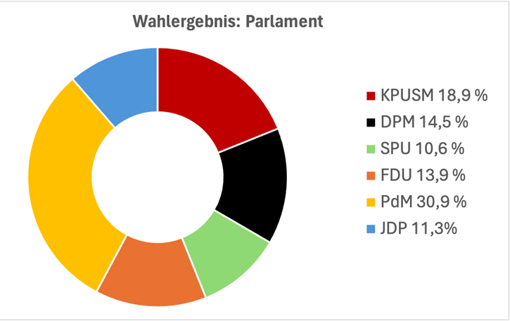

Parteigründung
Ihr seid mit den momentanen Parteien nicht zufrieden? Dann gibt es weiterhin die Möglichkeit unter Antrag zur Parteigründung eine neue Partei zu gründen und für die 2. Wahl währenddem Projekt zu kandidieren und somit selber Einfluss auf die Politik haben.
Wahlergebnisse
Ergebnisse der Wahlen vom 19.02.2024:


| Kandidaten | Stimmen |
|---|---|
| Celina Z. | 135 |
| Ferdinand D. | 161 |
| Isabell Z. | 160 |
| Andreas B. | 115 |
| Mayank P. | 145 |
| Lasse W | 264 |
| Wendelin R. | 256 |
| Parteien | Stimmen |
|---|---|
| KPUSM | 120 |
| DPM | 92 |
| SPU | 67 |
| FDU | 88 |
| PdM | 196 |
| JDP | 72 |
| Summe | 635 |
Allgemeine Infos
PPP mit allen Infos der Veranstaltung jetzt auch zum Download als PDF oder Präsentation erhältlich!
Parteigründungen und Kandidatur Königspaar
Ihr wollt endlich einen eigenen Einfluss auf die Politik haben? Dann könnt ihr ab jetzt mit euren Freunden eine Partei gründen und in den Wahlkampf starten.
Ihr wollt lieber höher hinaus und den Staat als Königin oder König repräsentieren? Dann habt ihr auch dazu jetzt die Chance! Kandidiert als zukünftiger Repräsentant der United States of Max Born und überzeugt eure Wähler von euren Argumenten!
Alle weiteren Infos findet ihr unter den Reitern Parteigründung und Kandidatur Königspaar